→ ฝึกกับโจทย์จริง: Pollution and Mortality (Assignment 5)
Lecture 5 — Model Selection
บทที่แล้ว (Lecture 3–4) สอนวิธีเช็คว่าโมเดลที่ fit ไปแล้วใช้ได้ไหม บทนี้ย้อนกลับไปหนึ่งขั้น: ก่อนจะ fit โมเดลสุดท้าย จะเลือกตัวแปรอิสระตัวไหนเข้าสมการบ้าง — เพราะโมเดล multiple regression ที่มีตัวแปรอิสระหลายตัว ไม่ได้แปลว่ายิ่งใส่ตัวแปรเยอะยิ่งดี Model Selection คือกระบวนการที่เป็นระบบในการตัดสินใจเรื่องนี้ และท้ายที่สุดทุกวิธีในบทนี้ต้องจบลงที่คุณเขียนสมการโมเดลสุดท้ายได้ชัดเจน — ตรงกับทักษะที่ 1 ของวิชานี้ตามที่ตั้งไว้ใน MISSION เพียงแต่คราวนี้ "การเขียนสมการ" หมายถึงตัดสินใจว่าพจน์ไหนควรอยู่ในสมการด้วย ไม่ใช่แค่เขียนสมการที่กำหนดมาให้แล้ว
เป้าหมายของ Model Building คือหาโมเดลที่มี "ชุดตัวแปรอิสระที่ดีที่สุด" ปัญหานี้เรียกว่า Model selection หรือ Variable selection และมีหลักคิด 2 แนวทาง:
ทำไมโมเดลแบบประหยัด (parsimonious) ถึงดีกว่า:
สไลด์เสนอ 2 วิธีที่ตั้งอยู่บนหลัก Occam's razor:
Stepwise regression สร้างสมการทีละขั้น มี 3 รูปแบบที่ต้องแยกให้ออก:
ข้อสังเกตสำคัญที่ต้องจำ: ทั้งสามวิธีนี้ไม่ได้รับประกันว่าจะได้โมเดลเดียวกันเสมอไป เพราะแต่ละวิธีเดินเส้นทางการค้นหาคนละแบบ — ตัวอย่างจริงในหัวข้อ 3–4 จะแสดงให้เห็นว่าบางครั้งทั้งสามวิธีให้ผลตรงกัน แต่บางครั้งก็ไม่ตรงกัน
ตัวอย่างใช้ข้อมูล mtcars ในตัว R ทำนาย mpg จากตัวแปรอิสระที่เหลือทั้งหมด ผ่านแพ็กเกจ olsrr:
library(MASS)
data(mtcars)
library(olsrr)
fullmodel<-lm(mpg~., data=mtcars)
ols_step_forward_p(fullmodel, p_val=0.05)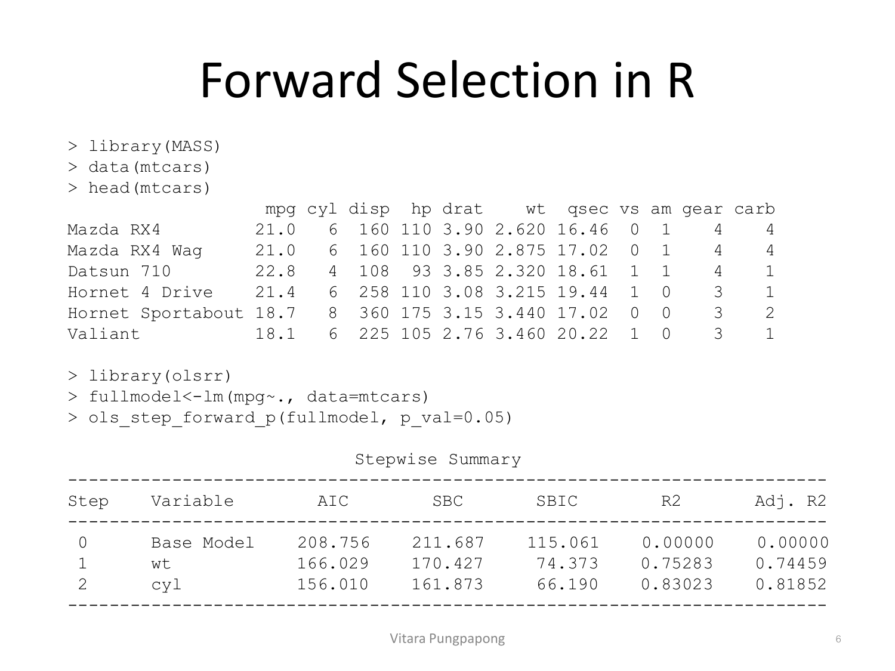
ols_step_forward_p (Lecture 5, p.6)อ่านตาราง Stepwise Summary ทีละขั้น:
wt เข้ามา — AIC ลดฮวบจาก 208.756 เหลือ 166.029 และ R² กระโดดเป็น 0.75283 (wt อธิบายความแปรปรวนของ mpg ได้กว่า 75% ตัวเดียว)cyl เข้ามาอีก — AIC ลดต่อเป็น 156.010, R² เพิ่มเป็น 0.83023, Adj. R² เพิ่มเป็น 0.81852p_val=0.05 ตามที่ระบุใน argument)ผลลัพธ์เต็มของโมเดล 2 ตัวแปรที่ได้ (mpg ~ wt + cyl):
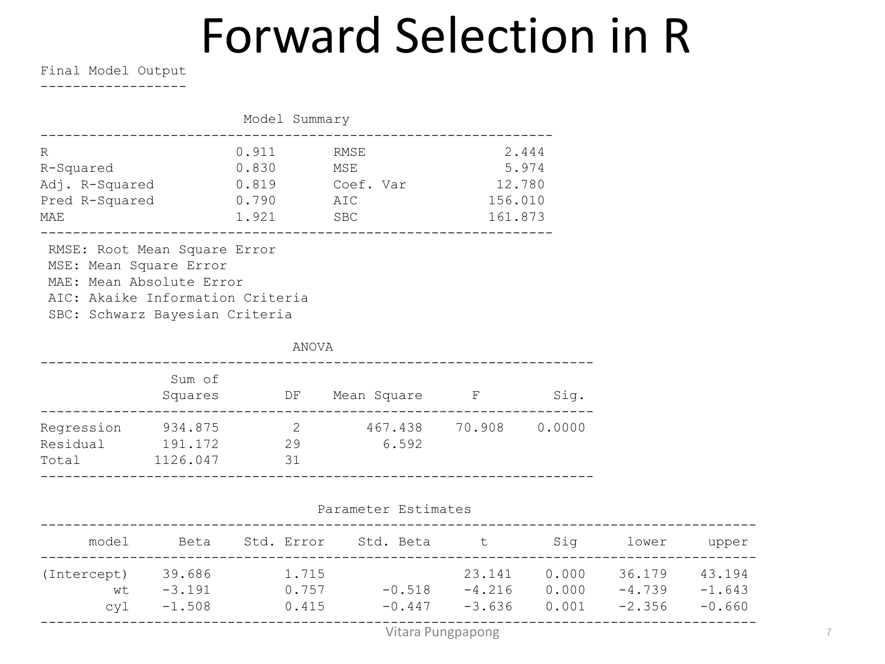
ดึงตัวเลขจาก Parameter Estimates มาเขียนเป็นสมการโมเดลสุดท้ายได้ทันที: Intercept = 39.686, wt = -3.191 (p<0.001), cyl = -1.508 (p=0.001) — ทั้งคู่มีนัยสำคัญทางสถิติ ดังนั้น:
แปลผล: เมื่อ cyl คงที่ น้ำหนักรถ (wt, พันปอนด์) ที่เพิ่มขึ้น 1 หน่วย สัมพันธ์กับ mpg ที่ลดลงโดยเฉลี่ย 3.191 ไมล์/แกลลอน และเมื่อ wt คงที่ จำนวนสูบ (cyl) ที่เพิ่มขึ้น 1 สูบ สัมพันธ์กับ mpg ที่ลดลงโดยเฉลี่ย 1.508 ไมล์/แกลลอน — โมเดลอธิบายความแปรปรวนของ mpg ได้ 83.0% (R²=0.830)
\[ \hat{mpg} = 39.686 - 3.191 \times wt - 1.508 \times cyl \]
ทั้ง wt (Sig.=0.000) และ cyl (Sig.=0.001) มีนัยสำคัญทางสถิติที่ระดับ α=0.05 (และแม้แต่ α=0.01) เพราะ p-value ทั้งคู่น้อยกว่า 0.05 มาก — นี่คือเหตุผลที่ forward selection เลือกเก็บทั้งสองตัวไว้ในโมเดลสุดท้าย
ใช้ full model เดิม (ตัวแปรอิสระทุกตัวใน mtcars) แล้วลบทีละตัวด้วย ols_step_backward_p(fullmodel, p_val=0.05):
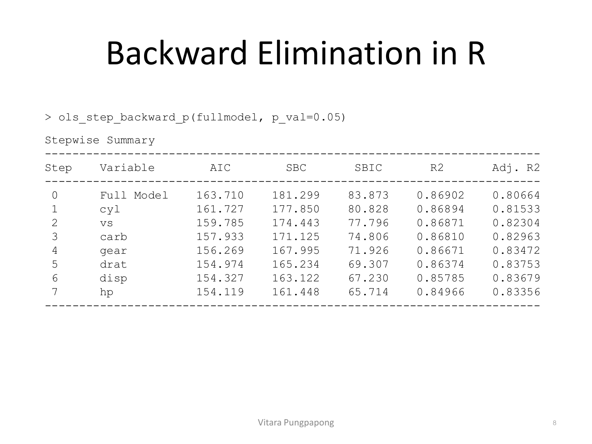
ols_step_backward_p (Lecture 5, p.8)ขั้นตอนนี้เริ่มจาก Full Model (ตัวแปรทั้ง 10 ตัว: cyl, disp, hp, drat, wt, qsec, vs, am, gear, carb) แล้วลบตัวแปรที่ p-value สูงที่สุดออกทีละตัวตามลำดับนี้:
cylvscarbgeardratdisphpรวม 7 ตัว จนเหลือ 3 ตัวสุดท้ายคือ wt, qsec, am ที่ AIC ต่ำสุดในเส้นทางนี้ (154.119)
ลองแบบ stepwise (both) ด้วย ols_step_both_p(fullmodel, p_enter=0.05, p_remove=0.05):
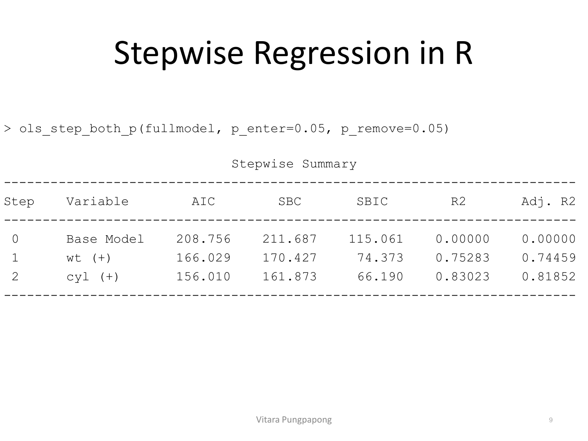
ols_step_both_p (Lecture 5, p.9)ผลลัพธ์ของ stepwise (both) คือเพิ่ม wt แล้วเพิ่ม cyl เหมือนกันเป๊ะกับ forward selection ทุกตัวเลข (AIC=156.010, R²=0.83023) — ในกรณีนี้ stepwise เห็นด้วยกับ forward แต่ไม่เห็นด้วยกับ backward
Best-subset regression คือการ fitทุกชุดค่าผสมของตัวแปรอิสระที่เป็นไปได้ แล้วเลือกชุดที่ดีที่สุดตาม criterion ที่กำหนด — ต่างจาก stepwise ที่เดินเส้นทางเดียวแล้วหยุด สไลด์ระบุ criterion ที่ใช้บ่อย 4 ตัว:
โครงสร้างสูตรของ Cp, BIC, AIC ล้วนแบ่งเป็น 2 ส่วนเสมอ: ส่วนที่วัดความคลาดเคลื่อนที่เหลือ (SS Res. part) บวกกับ ส่วนที่ลงโทษโมเดลที่มีพจน์เยอะเกินไป (penalty):
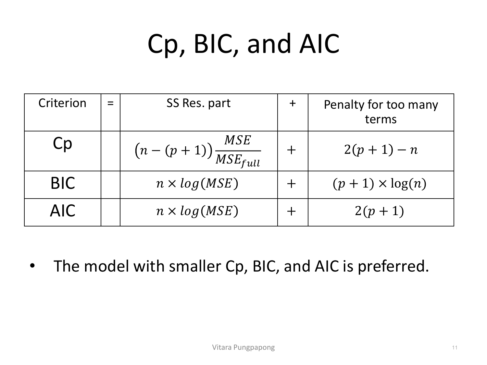
สูตรเต็ม:
โดย \(p\) คือจำนวนตัวแปรอิสระในโมเดลย่อยที่กำลังพิจารณา ดังนั้น \(p+1\) คือจำนวนพารามิเตอร์ทั้งหมดรวม intercept
จุดที่ข้อสอบชอบเช็คและคนสับสนบ่อยที่สุด: Cp, BIC, AIC ทั้งสามตัว "ยิ่งน้อยยิ่งดี" (minimize) สลับทิศทางกับ R²/Adjusted R² ที่ "ยิ่งมากยิ่งดี" (maximize)
สำหรับ Mallow's Cp มีกฎอ่านค่าเพิ่มเติมที่ใช้บ่อยในทางปฏิบัติ: ถ้าโมเดลย่อยนั้น "ดี" (ไม่มี bias จากการตัดตัวแปรสำคัญออก) ค่า Cp ควรจะใกล้เคียงกับ \(p+1\) (จำนวนพารามิเตอร์ของโมเดลนั้นเอง) และยิ่งค่า Cp ต่ำยิ่งดี — จะเห็นตัวอย่างตัวเลขจริงในหัวข้อ 6
ฟังก์ชัน R สำหรับแต่ละ criterion (ยังใช้ full model ของ mtcars เดิม):
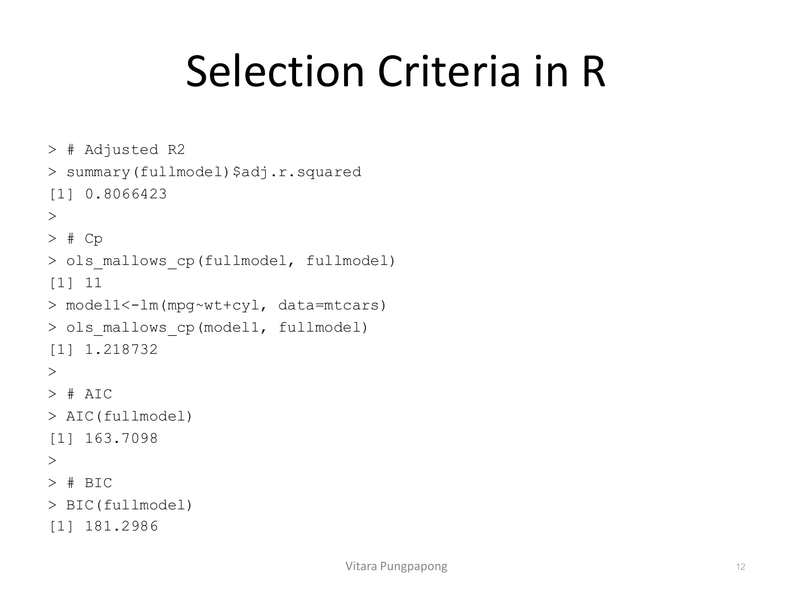
ไล่ตัวเลขทีละบรรทัดจากภาพ:
summary(fullmodel)$adj.r.squared ให้ 0.8066423 — Adjusted R² ของโมเดลเต็ม (10 ตัวแปร) ตรงกับที่เห็นใน backward table หัวข้อ 4 (Adj. R2=0.80664 ของ Full Model) พอดี ยืนยันว่าเป็นตัวเลขชุดเดียวกันols_mallows_cp(fullmodel, fullmodel) ให้ 11 — เมื่อเทียบโมเดลกับตัวมันเอง MSE/MSE_full=1 พอดี สูตร Cp จะลดรูปเหลือ \(C_p = p+1\) เสมอ (โมเดลเต็มมี 10 ตัวแปร จึง p+1=11 ตรงเป๊ะ นี่คือจุดตรวจสอบสูตรที่ดี)ols_mallows_cp(model1, fullmodel) ที่ model1=lm(mpg~wt+cyl) — ได้ 1.218732 ซึ่งต่ำกว่า p+1=3 ของ model1 เองด้วยซ้ำ (2 ตัวแปร+intercept=3) บ่งชี้ว่าโมเดล wt+cyl เป็นโมเดลที่ดีมากเทียบกับโมเดลเต็ม 10 ตัวแปร ไม่มี bias จากการตัดตัวแปรสำคัญทิ้งAIC(fullmodel)=163.7098 และ BIC(fullmodel)=181.2986 ตรงกับตัวเลขในหัวข้อ 4 เป๊ะเช่นกันฟังก์ชัน ols_step_all_possible() คำนวณ criterion ของทุกชุดค่าผสมของตัวแปรที่ระบุให้ในครั้งเดียว ตัวอย่างนี้จำกัดตัวแปรอิสระไว้แค่ 4 ตัว (wt, cyl, hp, carb) จะได้ทั้งหมด \(2^4-1=15\) โมเดลย่อย (ไม่นับโมเดลที่มีแค่ intercept):
samplemodel<-lm(mpg~wt+cyl+hp+carb, data=mtcars)
tmpoutput<-ols_step_all_possible(samplemodel)
output<-data.frame(predictors=tmpoutput$result$predictors,
adjr=tmpoutput$result$adjr, cp=tmpoutput$result$cp, aic=tmpoutput$result$aic,
bic=tmpoutput$result$sbc)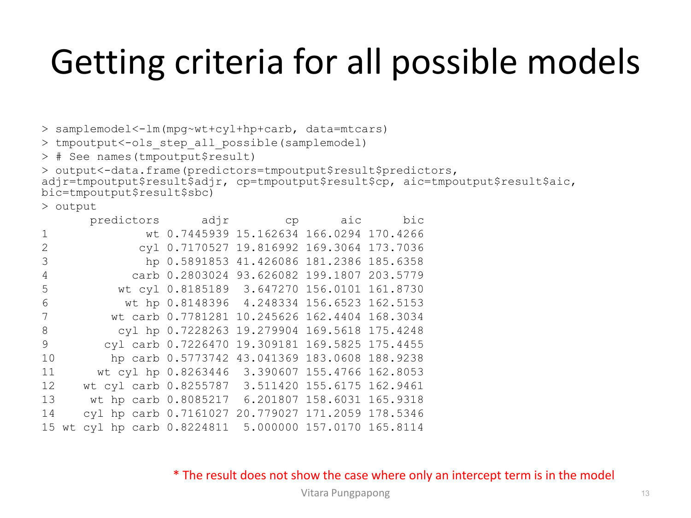
ไล่หาโมเดลที่ดีที่สุดตามแต่ละ criterion จากตาราง 15 แถวนี้:
wt cyl hp (adjr=0.8263446, aic=155.4766, cp=3.390607 ≈ p+1=4 พอดี — ดีตามกฎ Cp ในหัวข้อ 5)wt cyl (bic=161.8730 ต่ำกว่า wt cyl hp ที่ bic=162.8053) — นี่คือช่องว่างที่ AIC กับ BIC ให้คำตอบต่างกันจริงเหตุผลเชิงสูตร: พจน์ penalty ของ BIC คือ \((p+1)\log(n)\) ในขณะที่ AIC คือ \(2(p+1)\) เท่านั้น — เมื่อ n มากพอ \(\log(n) > 2\) เสมอ (ในที่นี้ n=32, log(32)≈3.47 > 2) ทำให้ BIC ลงโทษการเพิ่มตัวแปรตัวที่ 3 (hp) แรงกว่า AIC จนไม่คุ้มที่จะเพิ่ม ในขณะที่ AIC มองว่าคุ้ม — กฎจำง่าย: BIC มักเลือกโมเดลที่เล็กกว่าหรือเท่ากับที่ AIC เลือกเสมอ เพราะ BIC ลงโทษความซับซ้อนแรงกว่า
wt+cyl (adjr=0.8185189, cp=3.647270, aic=156.0101, bic=161.8730) และโมเดล B = wt+cyl+hp (adjr=0.8263446, cp=3.390607, aic=155.4766, bic=162.8053) ถ้าคุณต้องเลือกโมเดลโดยใช้ AIC เป็นเกณฑ์ จะเลือกโมเดลไหน? ถ้าใช้ BIC เป็นเกณฑ์ล่ะ? อธิบายว่าทำไมสองเกณฑ์นี้ให้คำตอบไม่ตรงกันใช้ AIC: เลือกโมเดล B (wt+cyl+hp) เพราะ aic=155.4766 < 156.0101 ของโมเดล A (ค่าน้อยกว่า=ดีกว่า)
ใช้ BIC: เลือกโมเดล A (wt+cyl) เพราะ bic=161.8730 < 162.8053 ของโมเดล B
สาเหตุ: BIC มีพจน์ penalty \((p+1)\log(n)\) ที่ลงโทษจำนวนพารามิเตอร์แรงกว่า AIC ที่มีพจน์ penalty แค่ \(2(p+1)\) เมื่อ n=32 (log(32)≈3.47>2) การเพิ่มตัวแปร hp เข้าไปตัวที่ 3 ทำให้ MSE ลดลงพอที่จะคุ้มค่ากับ penalty ของ AIC (จึงเลือก B) แต่ไม่คุ้มกับ penalty ที่แรงกว่าของ BIC (จึงยังเลือก A ที่เล็กกว่า) — สรุปคือ BIC มักนิยมโมเดลที่เล็กกว่าหรือเท่ากับ AIC เสมอ
แทนที่จะใช้เกณฑ์ p-value (หัวข้อ 3–4) ลองรันด้วยเกณฑ์ AIC โดยตรงผ่าน ols_step_forward_aic(fullmodel) กับ full model 10 ตัวแปรเดิม:
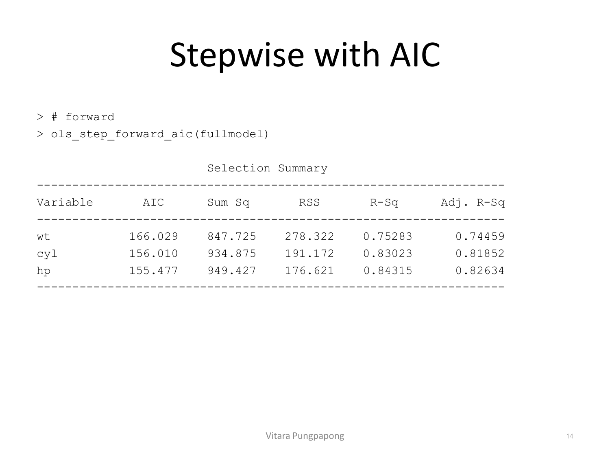
เปรียบเทียบกับหัวข้อ 3 ตรง ๆ:
wt (AIC=166.029) แล้ว cyl (AIC=156.010) เหมือนแบบ p-value ทุกตัวเลขhp เข้ามาอีก — AIC ลดลงต่อเป็น 155.477 (R²=0.84315, Adj.R²=0.82634)นี่คือเหตุผลของความต่าง: เกณฑ์ AIC ยอมรับตัวแปรตัวที่ทำให้ AIC ลดลงแม้จะไม่ผ่าน α=0.05 แบบ p-value test (การลด AIC กับ p-value<0.05 เป็นเงื่อนไขคนละแบบ ไม่ได้เทียบเท่ากันเป๊ะเมื่อมีตัวแปรมากกว่า 1 ตัวในการทดสอบ) — ผลคือ AIC-based selection มักได้โมเดลที่มีตัวแปรมากกว่าหรือเท่ากับ p-value-based selection เสมอ
ลองแบบ stepwise (both) ด้วยเกณฑ์ AIC ผ่าน ols_step_both_aic(fullmodel):
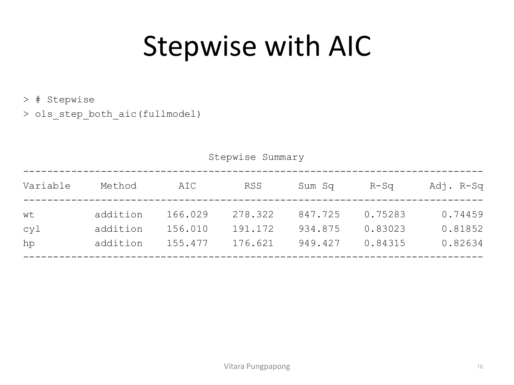
ผลลัพธ์ของ stepwise-AIC (both) คือ \(\text{wt} \to \text{cyl} \to \text{hp}\) เหมือนกันเป๊ะกับ forward-AIC — สอดคล้องกับที่เห็นในหัวข้อ 4 ว่า forward กับ stepwise มักลงรอยกัน (backward ต่างหากที่มักเดินคนละเส้นทาง) ส่วนผลของ ols_step_backward_aic(fullmodel) (ไม่แสดงภาพในที่นี้เพราะตัวเลขซ้ำกับตารางในหัวข้อ 4 ทุกประการ) ก็ยังคงลบตัวแปรลงจนเหลือ wt, qsec, am ที่ AIC=154.119 เหมือนแบบ p-value ทุกตัวเลข
สรุปภาพรวมของทั้งหัวข้อ 4 และ 8: ในตัวอย่าง mtcars นี้ เกณฑ์ (p-value vs AIC) ไม่ได้เปลี่ยนผลของ backward แต่เปลี่ยนผลของ forward/stepwise — ต้องอ่านทั้งเกณฑ์และวิธีการเดินเส้นทางประกอบกันเสมอ ห้ามด่วนสรุปว่าวิธีไหน "ถูก" กว่ากันโดยไม่ดูบริบท
add1() / drop1() / step() — ตัวอย่าง SAT Data ครบวงจรนอกจาก package olsrr แล้ว R มีฟังก์ชันมาตรฐานสำหรับทำ selection เอง: add1() (ลองเพิ่มตัวแปรทีละตัวแล้ว F-test), drop1() (ลองลบตัวแปรทีละตัวแล้ว F-test), และ step() (ทำอัตโนมัติทั้งกระบวนการโดยใช้ AIC/BIC) ตัวอย่างนี้ใช้ข้อมูลระดับรัฐของสหรัฐฯ ทำนายคะแนน SAT เฉลี่ยของรัฐ:
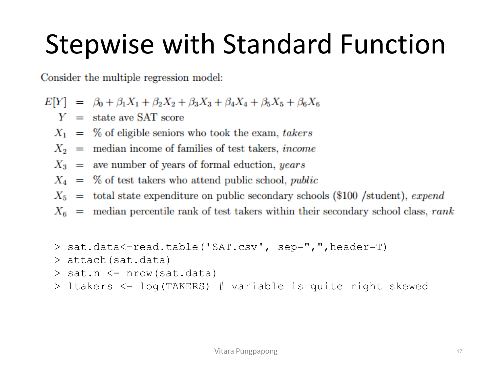
โมเดลเต็มทางทฤษฎีคือ \( E[Y] = \beta_0 + \beta_1 X_1 + \beta_2 X_2 + \beta_3 X_3 + \beta_4 X_4 + \beta_5 X_5 + \beta_6 X_6 \) โดย:
ltakers (=log ของ % นักเรียนที่สอบ เพราะตัวแปรเบ้ขวาจึง log ก่อน)INCOME (รายได้ครัวเรือนมัธยฐาน)YEARS (จำนวนปีการศึกษาเฉลี่ย)PUBLIC (% ที่เรียนโรงเรียนรัฐ)EXPEND (งบใช้จ่ายต่อหัวนักเรียน)RANK (percentile rank ในโรงเรียนของตัวเอง)สังเกตว่าโค้ดแปลง TAKERS เป็น log(TAKERS) ก่อนใช้งานเสมอ เพราะตัวแปรดิบเบ้ขวามาก การ log ช่วยให้ความสัมพันธ์เชิงเส้นกับ Y สมเหตุสมผลกว่า
add1(): ขั้นแรกขั้นตอนคือเริ่มจากโมเดลว่าง SAT~1 แล้วลอง "เพิ่ม" ตัวแปรแต่ละตัวทีละตัว ดูว่าตัวไหนช่วยได้มากที่สุด (F สูงสุด/p-value ต่ำสุด):
add1(lm(SAT~1), SAT~ ltakers + INCOME + YEARS + PUBLIC + EXPEND + RANK, test="F")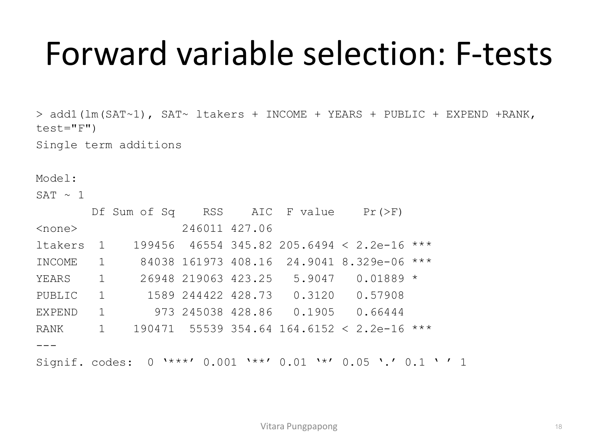
ดูคอลัมน์ F value: ltakers ให้ F สูงสุด (205.6494, p<2.2e-16) ตามมาด้วย RANK (F=164.6152) ส่วน PUBLIC และ EXPEND ไม่มีนัยสำคัญเลย (p=0.579 และ 0.664 ตามลำดับ) — เพิ่ม ltakers เข้าโมเดลก่อนเป็นตัวแรก เพราะให้ F สูงสุดและ RSS ลดจาก 246011 เหลือ 46554 มากที่สุดในบรรดาตัวแปรทั้งหมด
ทำซ้ำอีก 2 รอบ ในแต่ละรอบเลือกตัวแปรที่มี F สูงสุดและมีนัยสำคัญเข้าโมเดลต่อ:
add1(lm(SAT~ltakers), ...) — ตัวที่ดีที่สุดรอบสองคือ EXPEND (F=20.1388, p=4.642e-05) แซง YEARS (F=6.7167) และตัวอื่น ๆ ที่ไม่นัยสำคัญ จึงเพิ่ม EXPEND เป็นตัวที่สองadd1(lm(SAT~ltakers+EXPEND), ...) — รอบนี้เหลือ YEARS ตัวเดียวที่นัยสำคัญ (F=5.9415, p=0.01871) จึงเพิ่มเป็นตัวที่สามกระบวนการ "ลองเพิ่มทีละตัวแล้วเลือก F สูงสุดที่มีนัยสำคัญ" นี้เองคือหัวใจของ forward selection แบบทำมือ ซึ่งจะเห็นว่าให้ผลลัพธ์ตรงกับ step() อัตโนมัติในหัวข้อ 9.2 ทุกประการ
step() (เกณฑ์ AIC)แทนที่จะทำ add1() ทีละรอบด้วยมือ ใช้ step() ให้ทำอัตโนมัติทั้งกระบวนการ (ค่าเริ่มต้นของ step() ใช้เกณฑ์ AIC):
step(lm(SAT~1), SAT ~ ltakers + INCOME + YEARS + PUBLIC + EXPEND + RANK, direction="forward")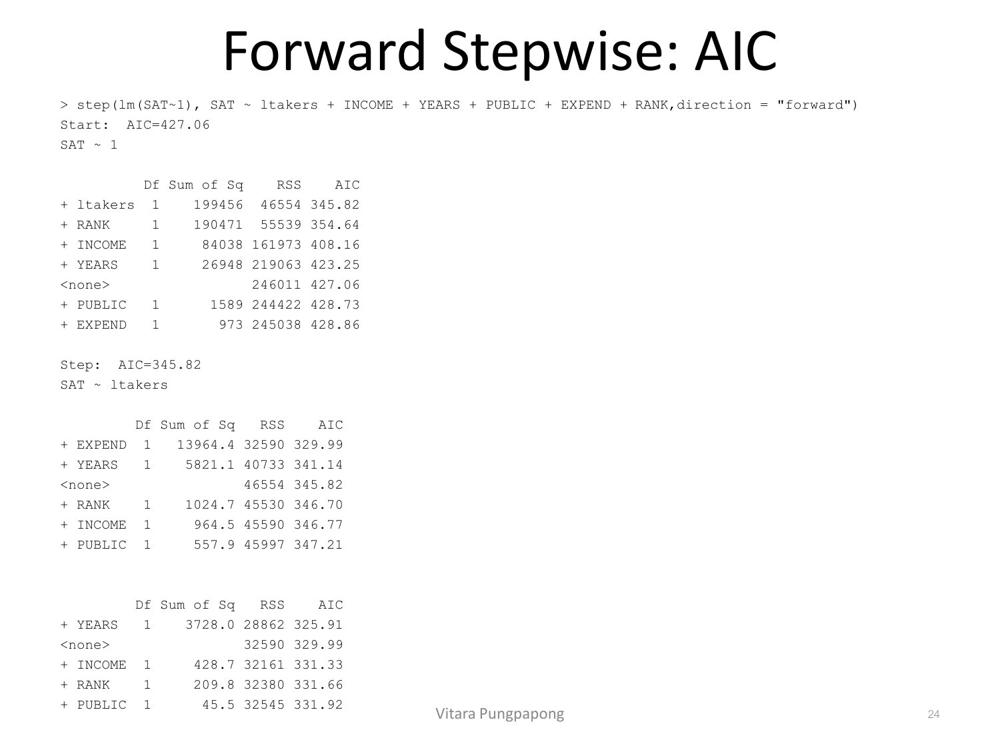
step() เพิ่มทีละตัว (Lecture 5, p.24)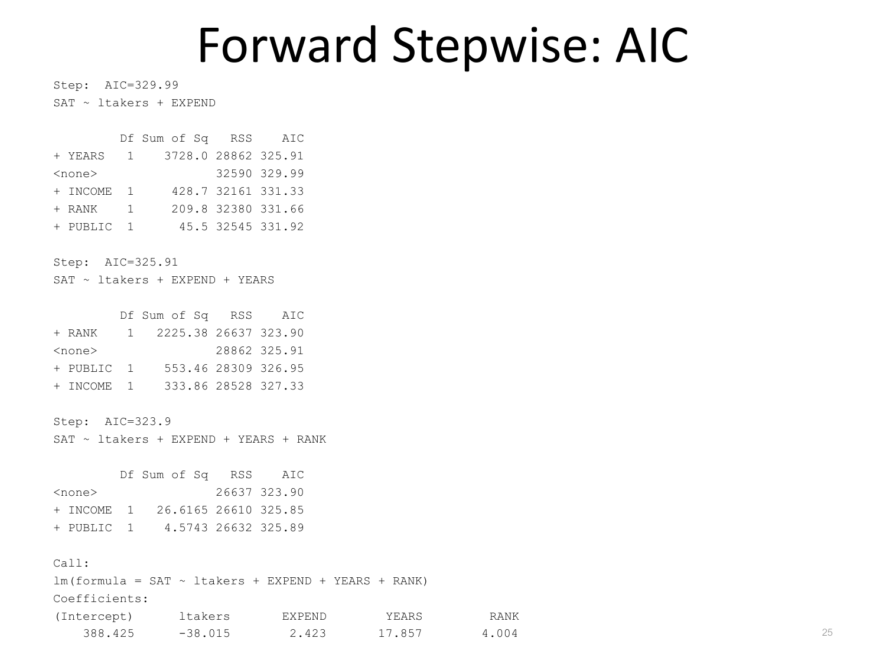
step() เดินเส้นทางเดียวกับที่ทำด้วยมือใน 9.1 เป๊ะ:
ltakers (AIC 427.06→345.82)EXPEND (→329.99)YEARS (→325.91)RANK (→323.90)และหยุดตรงนี้เพราะการเพิ่ม INCOME หรือ PUBLIC จะทำให้ AIC สูงขึ้น (325.85 และ 325.89 ตามลำดับ ซึ่งแย่กว่า <none>=323.90) — ผลลัพธ์สุดท้ายที่ R พิมพ์ให้ตรง ๆ คือสัมประสิทธิ์ครบทุกตัว จึงเขียนสมการโมเดลสุดท้ายได้ทันทีโดยไม่ต้องคำนวณเอง
drop1() และยืนยันด้วย step() (เกณฑ์ BIC)ทำย้อนกลับ: เริ่มจากโมเดลเต็ม 6 ตัวแปร แล้วลองลบทีละตัวด้วย drop1(lm(SAT~ltakers+INCOME+YEARS+PUBLIC+EXPEND+RANK), test="F") ดูคอลัมน์ F value/Pr(>F) ทีละรอบ:
PUBLIC มี p-value สูงสุด (0.841684) จึงถูกลบก่อนINCOME เป็นตัวที่มี p-value สูงสุด (0.834803) จึงถูกลบต่อltakers, YEARS, EXPEND, RANK) ที่ทุกตัวมี p-value ต่ำพอที่จะไม่ถูกลบต่อ (สูงสุดคือ RANK ที่ p=0.058793 ซึ่งยังไม่แย่พอที่กระบวนการ manual นี้จะตัดออก)ยืนยันด้วย step() แบบ backward แต่เปลี่ยนเกณฑ์เป็น BIC โดยใส่ k=log(sat.n) (ปกติ step() ใช้ k=2=AIC เป็นค่าเริ่มต้น การใส่ k=log(n) เปลี่ยนพจน์ penalty ให้ตรงกับสูตร BIC แทน):
step(lm(SAT ~ (ltakers+INCOME+YEARS+PUBLIC+EXPEND+RANK)), direction="backward", k=log(sat.n))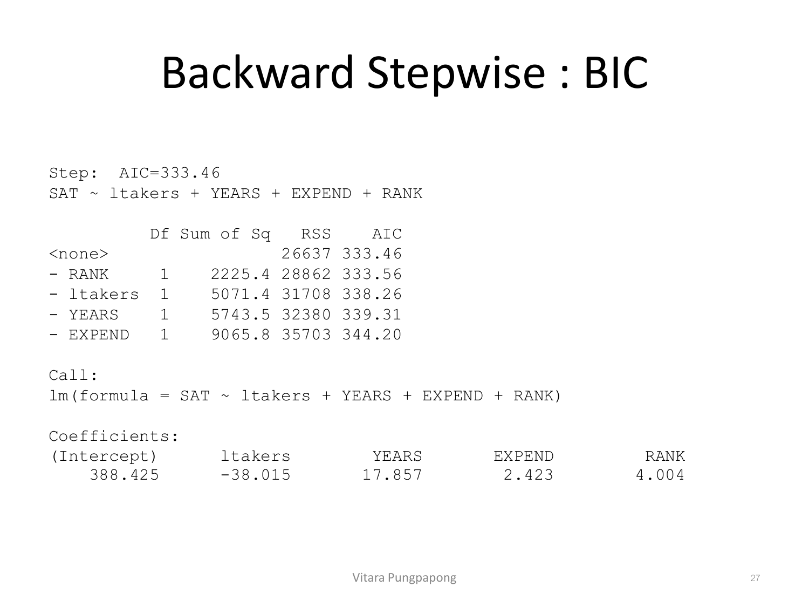
ผลลัพธ์ที่น่าทึ่ง: ทั้งสามเส้นทางต่อไปนี้มาบรรจบที่โมเดลเดียวกันเป๊ะ:
add1()/drop1()step() แบบ forward-AICstep() แบบ backward-BICทั้งหมดได้ SAT ~ ltakers + EXPEND + YEARS + RANK พร้อมสัมประสิทธิ์ชุดเดียวกันทุกตัว (388.425, −38.015, 2.423, 17.857, 4.004) — ต่างจากตัวอย่าง mtcars ในหัวข้อ 4 ที่ forward/backward ให้ผลไม่ตรงกัน! บทเรียนสำคัญ: การที่หลายวิธี/หลายเกณฑ์ลงเอยที่โมเดลเดียวกัน เป็นสัญญาณที่ดีว่าโมเดลนั้นมีเสถียรภาพ (robust) ไม่ได้ขึ้นกับวิธีการเลือกที่ใช้ เขียนสมการโมเดลสุดท้ายได้เต็มรูป:
\[ \hat{SAT} = 388.425 - 38.015 \times ltakers + 2.423 \times EXPEND + 17.857 \times YEARS + 4.004 \times RANK \]
น่าสนใจเพราะ forward-AIC เดินจากโมเดลว่างแล้วเพิ่มตัวแปรทีละตัวโดยใช้ penalty แบบ AIC (k=2) ส่วน backward-BIC เดินจากโมเดลเต็มแล้วลบตัวแปรทีละตัวโดยใช้ penalty แบบ BIC (k=log(n)) ที่ลงโทษความซับซ้อนแรงกว่า — สองวิธีนี้ทั้งทิศทางการค้นหาและเกณฑ์การตัดสินใจต่างกันโดยสิ้นเชิง แต่ยังคงมาบรรจบที่โมเดลเดียวกันเป๊ะ นี่คือสัญญาณว่าโมเดล ltakers+EXPEND+YEARS+RANK มีความเสถียรสูง ไม่ได้เป็นผลพลอยได้จากการเลือกวิธีใดวิธีหนึ่งโดยเฉพาะ ต่างจากตัวอย่าง mtcars ที่ forward กับ backward ให้ผลขัดแย้งกัน ซึ่งเป็นสัญญาณว่าโมเดลของ mtcars ไม่เสถียรเท่า SAT data
สไลด์เตือนไว้สั้น ๆ ว่ามี 3 สถานการณ์ที่ automatic stepwise/best-subset "อันตราย" ถ้าใช้แบบไม่ระวัง:
ข้อสรุปเชิงปฏิบัติ: เมื่อโมเดลมีพจน์ 3 ประเภทนี้ ควรตรวจสอบผลของ automatic selection ด้วยสายตาเสมอ ไม่ควรเชื่อผลลัพธ์อัตโนมัติแบบไม่คิด
แนวทางที่สองของ Model Selection (นอกจาก Occam's razor) คือมองผ่านมุม predictive performance — หัวใจของแนวทางนี้คือป้องกัน overfitting: เกิดขึ้นเมื่อโมเดลพยายามอธิบาย "noise" ในข้อมูล ไม่ใช่แค่สัญญาณ (signal) ที่แท้จริง
ทำไมถึงเป็นปัญหา: การพยายามอธิบาย noise จะทำให้ได้ข้อสรุปที่ผิดเพี้ยนและไม่ generalize ไปยังข้อมูลใหม่ที่ไม่เคยเห็น ทั้งที่เป้าหมายจริงของโมเดลเชิงพยากรณ์คือการทำนายข้อมูลที่ไม่เคยเห็นมาก่อน — วิธีป้องกันมี 2 แนวทาง:
วิธีพื้นฐานที่สุดในการวัด out-of-sample accuracy คือแบ่งข้อมูลเป็นสองส่วน สำหรับข้อมูล cross-sectional (แต่ละแถวเป็นอิสระจากกัน ไม่มีลำดับเวลา) ขั้นตอนคือสุ่มแบ่งแถวข้อมูลออกเป็นชุดฝึกฝน (training) กับชุดทดสอบ (test) ก่อน ฝึกโมเดลด้วยชุดฝึกฝนเท่านั้น แล้ววัดผลบนชุดทดสอบที่โมเดลไม่เคยเห็น:
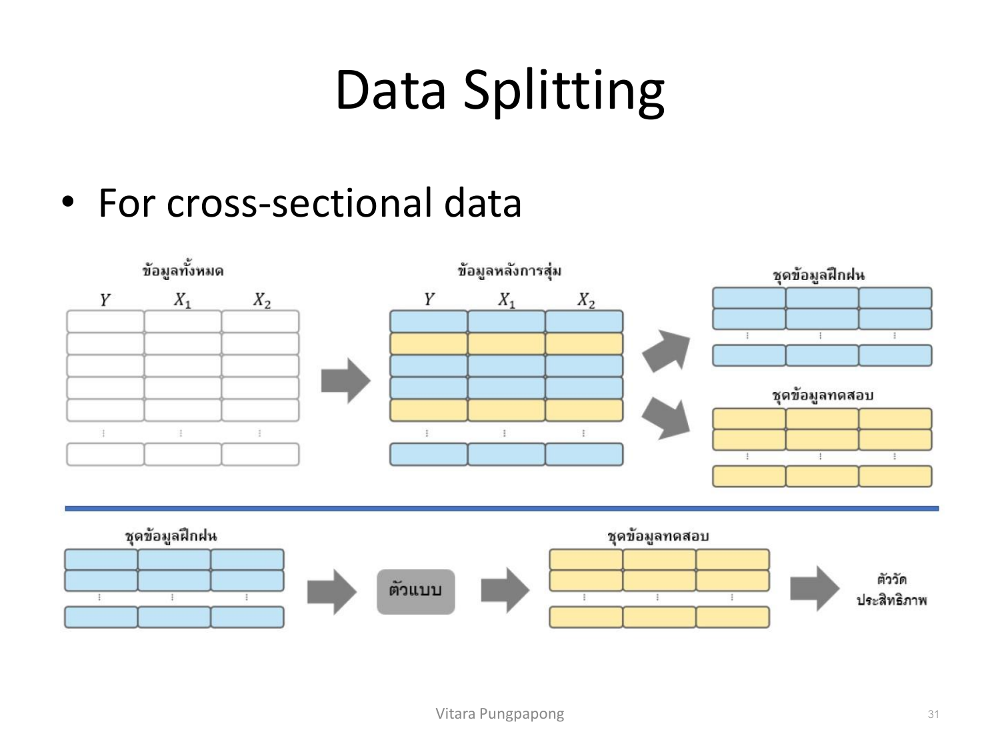
อ่านผังภาพ: ข้อมูลทั้งหมด (ตาราง Y, X₁, X₂) ถูกสุ่มก่อน (แถวสีฟ้า/เหลืองสลับกันไม่เป็นระเบียบ) แล้วค่อยแบ่งเป็นชุดฝึกฝน (สีฟ้า) กับชุดทดสอบ (สีเหลือง) — จุดสำคัญคือต้องสุ่มก่อนแบ่งเสมอสำหรับข้อมูล cross-sectional เพื่อไม่ให้ชุดฝึกฝนกับชุดทดสอบมีลักษณะข้อมูลต่างกันอย่างเป็นระบบ (เช่น ถ้าข้อมูลเรียงตามภูมิภาคอยู่แล้ว การตัดแบ่งตรง ๆ โดยไม่สุ่มจะทำให้ชุดทดสอบมีแต่ภูมิภาคเดียว)
สำหรับข้อมูล time series กลับห้ามสุ่มเด็ดขาด เพราะจะทำลายโครงสร้างเวลาที่ต้องรักษาลำดับก่อนหลังไว้:
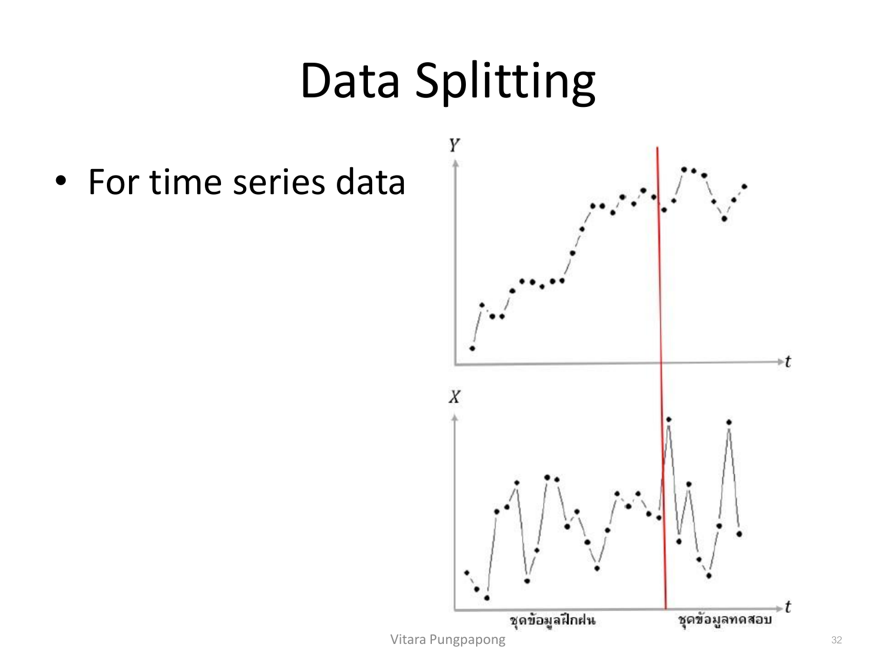
อ่านภาพ: เส้นแดงแนวตั้งตัดข้อมูลตามเวลา \(t\) ตรง ๆ — ช่วงก่อนเส้นแดง (ซ้าย) เป็นชุดฝึกฝน (ชุดข้อมูลฝึกฝน) ช่วงหลังเส้นแดง (ขวา) เป็นชุดทดสอบ (ชุดข้อมูลทดสอบ) ทั้งกราฟ Y(t) และ X(t) ถูกตัดที่จุดเวลาเดียวกัน — เหตุผลที่ห้ามสุ่ม: การพยากรณ์ time series ต้องใช้ข้อมูลอดีตทำนายอนาคตเท่านั้น ถ้าสุ่มแบ่งแล้วเผลอเอาจุดในอนาคตไปอยู่ชุดฝึกฝน จะเป็นการ "แอบดูอนาคต" (data leakage) ทำให้ผลวัดความแม่นยำสูงเกินจริง
ข้อเสียของการแบ่งข้อมูลครั้งเดียว (one split) คือผลวัดความแม่นยำขึ้นกับว่าบังเอิญสุ่มได้ชุดทดสอบแบบไหน — K-fold Cross-Validation แก้ปัญหานี้โดยแบ่งข้อมูล cross-sectional เป็น K ส่วนเท่า ๆ กัน แล้ววนทำ K รอบ แต่ละรอบใช้ 1 ส่วนเป็นชุดทดสอบและอีก K−1 ส่วนที่เหลือเป็นชุดฝึกฝน สลับกันไปจนครบทุกส่วน:
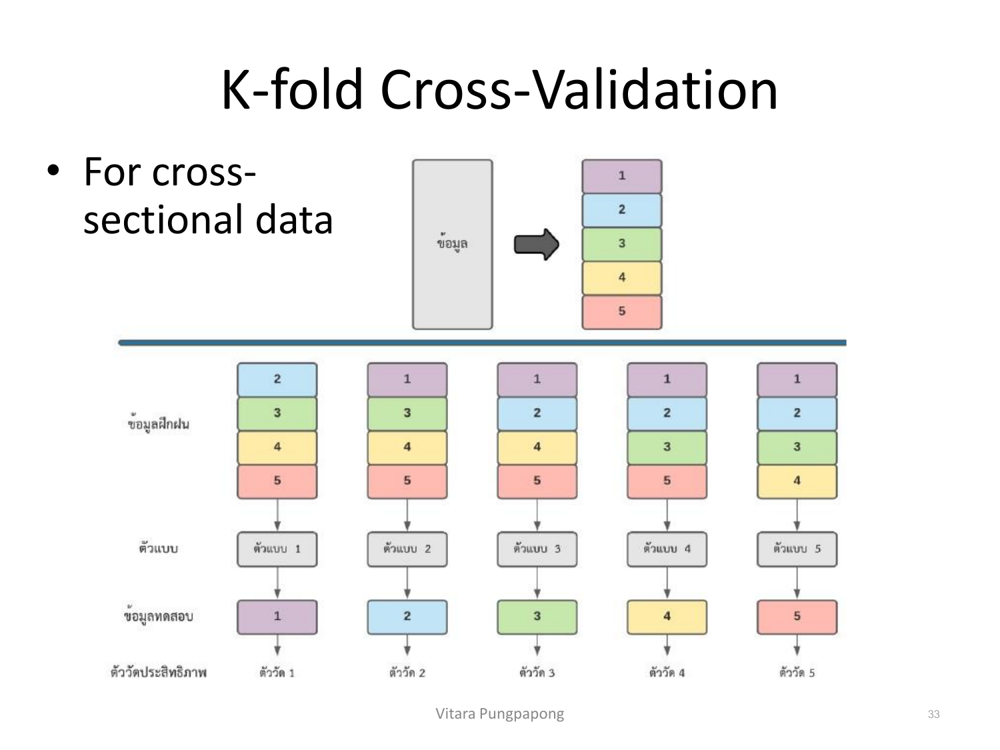
อ่านภาพ: ข้อมูลถูกแบ่งเป็น 5 ส่วน (fold 1–5) แล้ววนสร้างตัวแบบ 5 ตัว:
ข้อดีคือทุกจุดข้อมูลได้เป็นทั้งชุดฝึกฝนและชุดทดสอบสลับกันไป ทำให้ผลวัดความแม่นยำเสถียรกว่าและไม่ขึ้นกับความบังเอิญของการสุ่มครั้งเดียว (มักนำ 5 ค่าที่ได้มาเฉลี่ยกันเป็นผลสรุป)
ใน R ใช้ library splitTools สร้าง fold ได้ตรง ๆ — ตัวอย่างแบ่งข้อมูล 9 จุดเป็น 3 fold:
library(splitTools)
create_folds(y=1:9, k=3, type="basic", seed=5)
$Fold1
[1] 2 3 5 6 7 9
$Fold2
[1] 1 3 4 5 7 8
$Fold3
[1] 1 2 4 6 8 9ตัวเลขในแต่ละ $Fold คือดัชนีของชุดฝึกฝนของรอบนั้น (ไม่ใช่ชุดทดสอบ) — สังเกตว่า Fold1 มี 6 ดัชนีจาก 9 จุด (2,3,5,6,7,9) แปลว่าอีก 3 ดัชนีที่ขาดไป (1,4,8) คือชุดทดสอบของรอบนั้น ตรงกับสัดส่วน k=3 (ฝึกฝน 2 ใน 3 ส่วน ทดสอบ 1 ใน 3 ส่วนของแต่ละรอบพอดี)
K-fold แบบสุ่มใช้กับ time series ไม่ได้ (จะทำลายลำดับเวลา) จึงต้องใช้เทคนิคเฉพาะ: Sliding Window และ Cumulative Sliding Window:
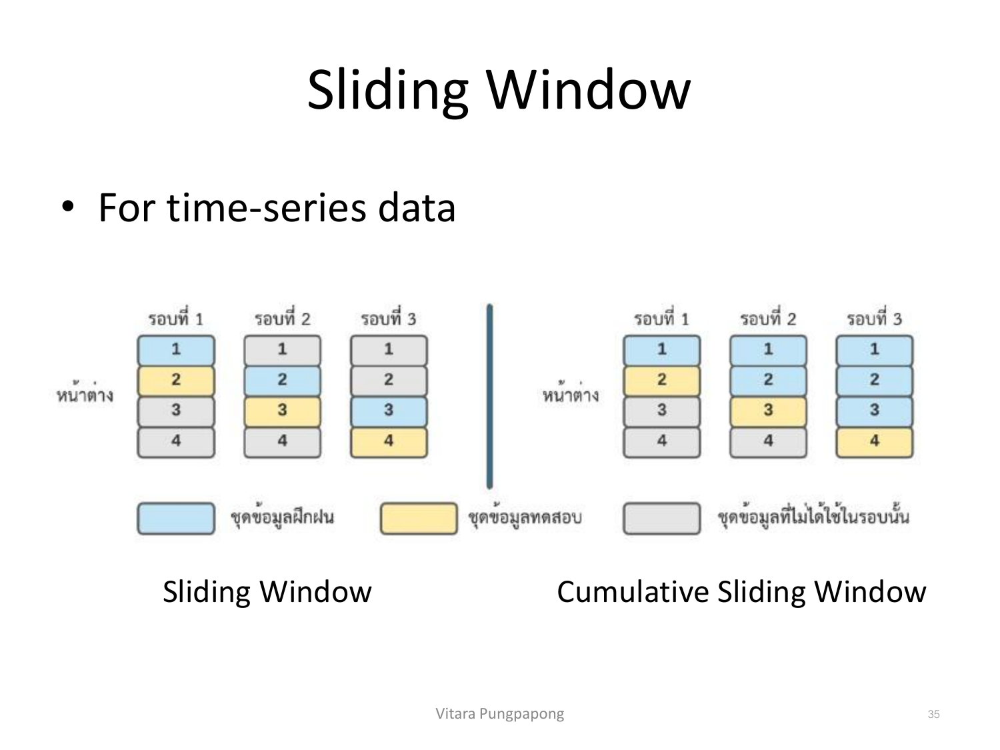
อ่านภาพฝั่งซ้าย (Sliding Window) ทีละรอบ:
ขนาดชุดฝึกฝนคงที่ตลอด (แค่ 1 จุดในภาพนี้) เพียงแต่เลื่อนตำแหน่งไปเรื่อย ๆ ตามเวลา
อ่านภาพฝั่งขวา (Cumulative Sliding Window) ทีละรอบ:
ขนาดชุดฝึกฝนโตขึ้นเรื่อย ๆ ทุกรอบ (สะสมข้อมูลอดีตทั้งหมด) ต่างจาก Sliding Window ธรรมดาที่ขนาดคงที่และ "ลืม" ข้อมูลเก่าที่เลยหน้าต่างไปแล้ว — ทั้งสองแบบยังคงหลักการเดียวกับหัวข้อ 12 คือใช้เฉพาะข้อมูลอดีตทำนายอนาคตเท่านั้น ไม่เคยย้อนกลับ
ไม่ว่าจะแบ่งข้อมูลด้วยวิธีไหนในหัวข้อ 12–14 สุดท้ายต้องมีตัวเลขสรุปความแม่นยำบนชุดทดสอบ สไลด์ให้ 3 สูตรหลัก:
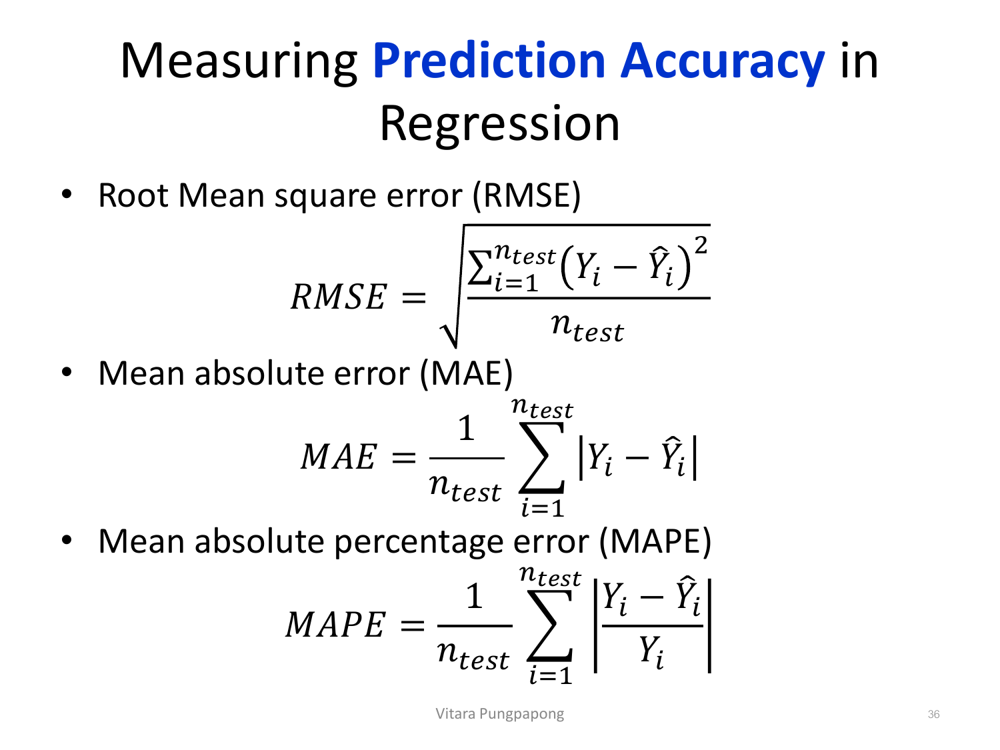
ทั้งสามตัวยิ่งน้อยยิ่งดี เหมือนกันหมด (ต่างจาก R² ที่ยิ่งมากยิ่งดี ต้องระวังอย่าจำสลับกับหัวข้อ 5)
Exercise 1 — Housing Price in Boston: ใช้ข้อมูล Boston จากแพ็กเกจ MASS (library(MASS); data(Boston)) ทำนาย medv (มูลค่ามัธยฐานบ้านที่เจ้าของอยู่เอง หน่วยพันดอลลาร์) ด้วย 2 โมเดล: (1) linear regression ที่ใส่ตัวแปรอิสระทุกตัว และ (2) โมเดลที่ได้จาก stepwise regression:
stepmodel<-step(lm(medv~1, data=traindata),
medv~crim+zn+indus+chas+nox+rm+age+dis+rad+tax+ptratio+black+lstat, direction="both")แล้วเปรียบเทียบทั้งสองโมเดลด้วย RMSE, MAE, MAPE (สูตรจากหัวข้อ 15) ผ่านฟังก์ชันช่วยคำนวณที่สไลด์ให้มา:
predacc<-function(y, yhat)
{
n<-length(y)
RMSE<-sqrt(sum((y-yhat)^2)/n)
MAE<-sum(abs(y-yhat))/n
MAPE<-sum(abs((y-yhat)/y))/n
output<-data.frame(RMSE=RMSE, MAE=MAE, MAPE=MAPE)
output
}โดยให้ทำ 2 รูปแบบการวัด:
Exercise 2 — Pollution in Changping: ข้อมูลคุณภาพอากาศจากเขต Changping กรุงปักกิ่ง ช่วง 1/3/2013–28/2/2017 (4 ปี) จาก package AppRegR (data(changping)) มีตัวแปร PM2.5, PM10, SO2, NO2, CO, O3, TEMP, PRES, DEWP รายวัน เป้าหมายคือทำนาย PM2.5 โดยเปรียบเทียบ 2 โมเดล:
ols_step_all_possible() เหมือนหัวข้อ 7 แล้วเลือกแถวที่ aic น้อยที่สุดด้วย which.min())bestsubset<-ols_step_all_possible(fullmodel)
minAICpredictor<-bestsubset[which.min(bestsubset$result$aic),3]
formula<-paste("PM2.5~", gsub(" ", "+", minAICpredictor), sep="")
minAICmodel<-lm(formula, data=traindata)เนื่องจากเป็นข้อมูล time series (มีวันที่กำกับ) การแบ่ง train/test ต้องตัดตามเวลาเท่านั้น (traindata<-changping[changping$date<="2016-02-29",], testdata<-changping[changping$date>"2016-02-29",]) ตรงตามหลักในหัวข้อ 12 แล้ววัดผลด้วย RMSE/MAE/MAPE ผ่าน 3 วิธี (หัวข้อ 14):
สังเกตว่าโจทย์ทั้งสองข้อนี้คือการเอาทุกเทคนิคในบทนี้ (model selection + data splitting + accuracy metric) มาประกอบร่างกันเป็นงานวิเคราะห์ฉบับเต็ม ตรงกับรูปแบบข้อสอบ/การบ้านของวิชานี้ตาม MISSION
ตอนนี้คุณควรทำสิ่งต่อไปนี้ได้:
add1()/drop1()/step() เดินกระบวนการ selection ด้วยมือได้และเขียนสมการโมเดลสุดท้ายจากผลลัพธ์ได้ทันทีทักษะทั้งหมดนี้คือขั้นตอนที่ต้องทำก่อนจะได้สมการโมเดลที่พร้อมเอาไปเช็ค assumption และแปลผลตามที่ฝึกไว้ใน Lecture 1–4
ตารางนี้ไล่ทุกหน้าของ Lecture5.pdf ตั้งแต่หน้า 1 ถึง 44 — หน้าที่มี ✓ ถูกอธิบายและ/หรือใส่รูปในเนื้อหาข้างบนแล้ว ส่วนที่เหลือ (etc) เป็นหน้าปก/หน้าคั่น/ภาพประกอบตกแต่งที่ไม่มีข้อมูลให้สอนเพิ่ม หรือภาพซ้ำกับหน้าอื่นที่ใช้แทนแล้ว
| หน้า | เนื้อหา | สถานะ |
|---|---|---|
| 1 | ปกเรื่อง "Lecture 5: Model Selection" | etc — ปก |
| 2 | Model Building — เป้าหมายและ 2 แนวทาง (Occam's razor / Predictive performance) | ✓ หัวข้อ 1 |
| 3 | Occam's Razor Principle — นิยาม + คำคม (ภาพประกอบมีดโกน) | ✓ หัวข้อ 1 |
| 4 | Occam's Razor Principle — ประโยชน์ของโมเดลประหยัด + 2 วิธี | ✓ หัวข้อ 1 |
| 5 | Stepwise Regression — นิยาม Forward/Backward/Stepwise | ✓ หัวข้อ 2 |
| 6 | Forward Selection in R — mtcars, ols_step_forward_p | ✓ หัวข้อ 3 (มีรูป) |
| 7 | Final Model Output — Forward Selection (summary/ANOVA/params) | ✓ หัวข้อ 3 (มีรูป) |
| 8 | Backward Elimination in R — mtcars, ols_step_backward_p | ✓ หัวข้อ 4 (มีรูป) |
| 9 | Stepwise Regression in R — mtcars, ols_step_both_p | ✓ หัวข้อ 4 (มีรูป) |
| 10 | Best subset regression — นิยาม + 4 criteria | ✓ หัวข้อ 5 |
| 11 | Cp, BIC, and AIC — ตารางสูตร | ✓ หัวข้อ 5 (มีรูป) |
| 12 | Selection Criteria in R — adj.r.squared, Cp, AIC, BIC | ✓ หัวข้อ 6 (มีรูป) |
| 13 | Getting criteria for all possible models — ตาราง 15 โมเดล | ✓ หัวข้อ 7 (มีรูป) |
| 14 | Stepwise with AIC — forward (ols_step_forward_aic) | ✓ หัวข้อ 8 (มีรูป) |
| 15 | Stepwise with AIC — backward (ols_step_backward_aic) | ✓ หัวข้อ 8 (อธิบายในเนื้อหา ไม่ใส่รูปซ้ำเพราะตัวเลขตรงกับหัวข้อ 4) |
| 16 | Stepwise with AIC — stepwise both (ols_step_both_aic) | ✓ หัวข้อ 8 (มีรูป) |
| 17 | Stepwise with Standard Function — นิยามตัวแปร SAT Data | ✓ หัวข้อ 9 (มีรูป) |
| 18 | Forward variable selection: F-tests — add1() รอบ 1 (SAT~1) | ✓ หัวข้อ 9.1 (มีรูป) |
| 19 | Forward variable selection: F-tests — add1() รอบ 2 (SAT~ltakers) | ✓ หัวข้อ 9.1 (อธิบายในเนื้อหา) |
| 20 | Forward variable selection: F-tests — add1() รอบ 3 (+EXPEND) | ✓ หัวข้อ 9.1 (อธิบายในเนื้อหา) |
| 21 | Backward variable selection: F-tests — drop1() รอบ 1 (โมเดลเต็ม 6 ตัว) | ✓ หัวข้อ 9.3 (อธิบายในเนื้อหา + quiz 10) |
| 22 | Backward variable selection: F-tests — drop1() รอบ 2 (5 ตัว) | ✓ หัวข้อ 9.3 (อธิบายในเนื้อหา) |
| 23 | Backward variable selection: F-tests — drop1() รอบ 3 (4 ตัว, สุดท้าย) | ✓ หัวข้อ 9.3 (อธิบายในเนื้อหา) |
| 24 | Forward Stepwise: AIC — step() เพิ่ม ltakers, EXPEND, YEARS | ✓ หัวข้อ 9.2 (มีรูป) |
| 25 | Forward Stepwise: AIC — step() เพิ่ม RANK + โมเดลสุดท้าย | ✓ หัวข้อ 9.2 (มีรูป) |
| 26 | Backward Stepwise: BIC — step() ลบ PUBLIC, INCOME | ✓ หัวข้อ 9.3 (อธิบายในเนื้อหา ไม่ใส่รูปซ้ำเพราะโมเดลสุดท้ายอยู่หน้า 27) |
| 27 | Backward Stepwise: BIC — โมเดลสุดท้าย + สัมประสิทธิ์ | ✓ หัวข้อ 9.3 (มีรูป) |
| 28 | Concerns in Automatic Selection Procedure — Polynomial/Interaction/Dummy | ✓ หัวข้อ 10 |
| 29 | Model Selection for Prediction (หน้าคั่นหัวข้อ ไม่มีเนื้อหา) | etc — หน้าคั่น |
| 30 | Overfitting — นิยาม/ทำไมแย่/วิธีป้องกัน | ✓ หัวข้อ 11 |
| 31 | Data Splitting — for cross-sectional data | ✓ หัวข้อ 12 (มีรูป) |
| 32 | Data Splitting — for time series data | ✓ หัวข้อ 12 (มีรูป) |
| 33 | K-fold Cross-Validation — for cross-sectional data | ✓ หัวข้อ 13 (มีรูป) |
| 34 | 'splitTools' R library — create_folds() ตัวอย่าง | ✓ หัวข้อ 13 (อธิบายในเนื้อหา) |
| 35 | Sliding Window — for time-series data | ✓ หัวข้อ 14 (มีรูป) |
| 36 | Measuring Prediction Accuracy in Regression — RMSE, MAE, MAPE | ✓ หัวข้อ 15 (มีรูป) |
| 37 | Exercise 1: Housing Price in Boston (ภาพถ่ายตกแต่งหัวข้อ) | etc — ภาพถ่ายตกแต่ง ไม่มีข้อมูลวิเคราะห์ โจทย์อธิบายด้วยข้อความในหัวข้อ 16 แทน |
| 38 | Exercise 1: Housing Price in Boston — โจทย์ + โค้ด stepmodel | ✓ หัวข้อ 16 |
| 39 | Exercise 1: Housing Price in Boston — โค้ด predacc() | ✓ หัวข้อ 16 |
| 40 | Exercise 2: Pollution in Changping (แผนที่ปักกิ่งตกแต่งหัวข้อ) | etc — ภาพแผนที่ตกแต่ง ไม่มีข้อมูลวิเคราะห์ โจทย์อธิบายด้วยข้อความในหัวข้อ 16 แทน |
| 41 | Exercise 2: Pollution in Changping — head(changping) ตัวอย่างข้อมูล | ✓ หัวข้อ 16 |
| 42 | Exercise 2: Pollution in Changping — เป้าหมาย + โค้ดแบ่ง train/test ตามวันที่ | ✓ หัวข้อ 16 |
| 43 | Exercise 2: Pollution in Changping — โค้ดเลือกโมเดล AIC ต่ำสุด | ✓ หัวข้อ 16 |
| 44 | Sliding Window (ภาพซ้ำกับหน้า 35 เป๊ะ) | etc — ภาพซ้ำกับหน้า 35 ที่ใช้แทนแล้ว |
สงสัยตรงไหน ถามได้เลยในแชท — ผมเป็นผู้สอนของคุณ ถามซ้ำได้ ถามลึกได้ ไม่ต้องเกรงใจ